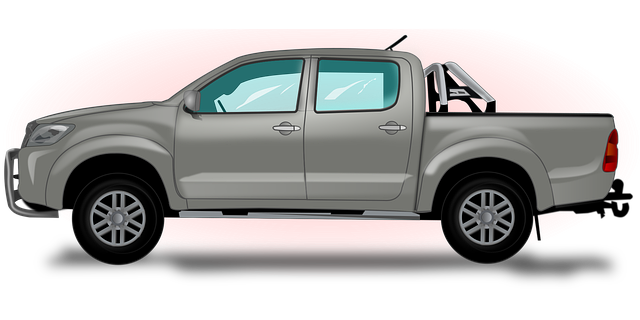
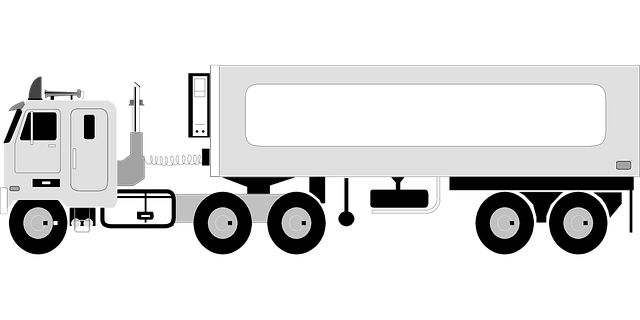

2010 — Les débuts d'une aventure
L’année 2010 marque la naissance d’AutoConduitePro. Avec seulement deux véhicules et une petite salle de cours, nos fondateurs ont voulu créer une école différente : plus humaine, plus moderne et plus connectée.
Depuis plus d'une décennie, AutoConduitePro accompagne les futurs conducteurs vers la réussite et la sécurité. Voici les moments clés qui ont forgé notre réputation.

L’année 2010 marque la naissance d’AutoConduitePro. Avec seulement deux véhicules et une petite salle de cours, nos fondateurs ont voulu créer une école différente : plus humaine, plus moderne et plus connectée.
Grâce à la satisfaction de nos premiers élèves et à un bouche-à-oreille positif, nous avons ouvert de nouvelles antennes dans plusieurs villes. notamment
Toujours à la pointe, AutoConduitePro a lancé sa plateforme en ligne. Les apprenants peuvent désormais suivre des modules théoriques à distance, réserver leurs leçons, et suivre leur progression en temps réel.

Nous avons investi dans des simulateurs de conduite de dernière génération, permettant à nos élèves de pratiquer sans risque avant de prendre le volant réel. Une révolution pédagogique saluée par la presse spécialisée.
Aujourd’hui, AutoConduitePro forme des milliers d’élèves chaque année. Notre mission reste la même : transmettre la passion de la route, la prudence et la confiance. Demain, nous irons encore plus loin, avec la conduite assistée et la formation éco-responsable.